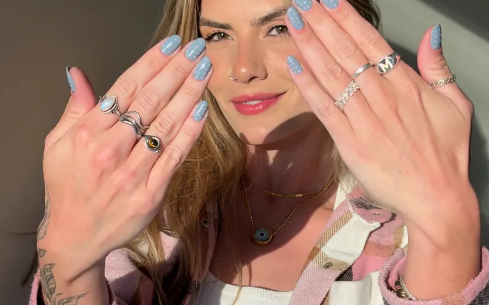

Mais que unhas
É assim que a gente resume o studio: uma experiência de cuidado. Há mais de 10 anos realçando a beleza das clientes, com tempo para conversar sobre o formato, a cor e o que combina com a rotina de cada uma.
Esmaltação, esmaltação em gel, alongamento e cuidados com os pés, num espaço que também é cafeteria.
“Obrigada por estar conosco há mais de 10 anos.”
Agradecimento do studio a uma cliente, publicado no Instagram
Porque cuidado também é poder
Unhas que falam por você: elegantes, marcantes, do seu jeito. Para agendar, escolha o serviço e o horário direto pelo site; a agenda mostra só o que está realmente livre.
